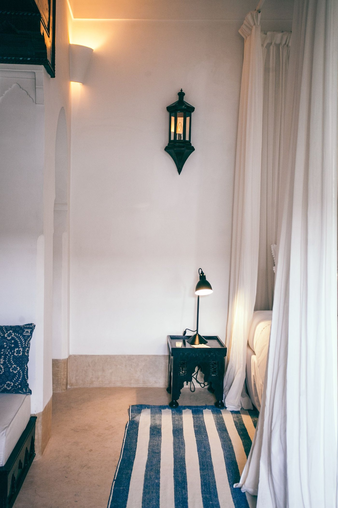

Vous devez collecter la taxe de séjour. Voici combien, et pour qui.

Vous louez un appartement à la nuitée, et un voyageur vous demande pourquoi il y a une ligne de plus sur sa facture. Vous savez qu'il existe une taxe de séjour, vous avez entendu qu'il faut la reverser, mais personne ne vous a dit combien, ni à qui.
C'est normal : cette taxe ne figure ni dans la loi 80-14, ni dans son décret d'application. Elle est dans un texte séparé, que presque personne ne cite, et c'est là que se trouvent les montants. Cet article reprend ce texte article par article.
Elle vient s'ajouter aux obligations plus connues de la loi 80-14 — l'autorisation d'exploitation et l'assurance — mais elle se règle ailleurs, dans ce texte séparé que presque personne ne consulte.
Ce que la loi appelle la taxe de séjour
La taxe de séjour est instituée par la loi n° 47-06 relative à la fiscalité des collectivités locales. Elle figure à l'article 2 dans la liste des taxes que les communes urbaines et rurales sont autorisées à percevoir, et son régime occupe le chapitre IX de cette loi, articles 70 à 76.
L'article 70 en donne le principe : la taxe « est perçue dans les établissements d'hébergement touristiques appartenant à des personnes morales ou physiques et vient en sus du prix de la chambre ». Autrement dit, elle ne sort pas de votre poche : elle s'ajoute à ce que paie le voyageur, et vous n'êtes que celui qui la collecte.
Le même article définit ce qu'il entend par établissement d'hébergement touristique : les hôtels proposant « des chambres ou des appartements équipés et meublés à une clientèle de passage ou de séjour », les clubs privés, les motels, les villages de vacances, les résidences touristiques, les maisons d'hôtes, les centres ou palais des congrès, « et tout établissement touristique au sens de la loi n° 61-00 portant statut des établissements touristiques ».
Attention à ce renvoi, c'est un piège
Cette mention de la loi n° 61-00 date d'avant la réforme. L'article 59 de la loi n° 80-14 dispose que la loi n° 61-00 est abrogée, et que « les références à la loi précitée n° 61-00 dans les textes en vigueur sont remplacées par la référence à la présente loi ». Autrement dit, quand l'article 70 de la loi 47-06 vous renvoie à la loi 61-00, il faut lire la loi 80-14. Un article qui recopie le texte sans faire ce lien vous envoie vers une loi qui n'existe plus.
Les montants officiels, par catégorie
L'article 72 fixe la base : la taxe est due par personne et par nuitée. Elle n'est donc pas due par logement ni par séjour, mais pour chaque voyageur, chaque nuit. Un couple qui reste trois nuits représente six fois la taxe.
L'article 73 donne les tarifs, exprimés en dirhams :
| Catégorie d'établissement | Tarif par personne et par nuitée |
|---|---|
| Maisons d'hôtes, centres ou palais de congrès, hôtels de luxe | de 15 à 30 DH |
| Hôtel 5 étoiles | de 10 à 25 DH |
| Hôtel 4 étoiles | de 5 à 10 DH |
| Hôtel 3 étoiles | de 3 à 7 DH |
| Hôtel 2 et 1 étoile | de 2 à 5 DH |
| Clubs privés | de 10 à 25 DH |
| Villages de vacances | de 5 à 10 DH |
| Résidences touristiques | de 3 à 7 DH |
| Motels, gîtes, relais et autres établissements touristiques | de 2 à 5 DH |
Ce sont des fourchettes, pas des montants fixes. Et c'est le point que la plupart des sites oublient de préciser.
Pourquoi le montant n'est pas le même d'une ville à l'autre
L'article 168 de la même loi est clair : lorsque la loi ne fixe pas de tarif fixe, « ces tarifs et taux sont fixés par arrêté pris par l'ordonnateur de la collectivité locale concernée après approbation du conseil de ladite collectivité ».
Traduction concrète : la loi donne un encadrement, et chaque commune choisit son taux à l'intérieur. Deux villes peuvent donc appliquer deux montants différents dans la même fourchette. C'est pour cette raison qu'aucun article sérieux ne peut vous donner « le » montant de la taxe de séjour au Maroc sans préciser la commune. Le seul chiffre qui compte pour vous est celui de votre commune, et il se demande au service communal.
Qui en est exonéré
L'article 71 dispense de la taxe quatre types d'établissements et une catégorie de personnes :
- les hôtels non classés ;
- les pensions ;
- les camping-caravanings ;
- les auberges de jeunesse ;
- et les enfants de moins de douze ans.
Cette dernière ligne est celle qu'on oublie le plus souvent dans le calcul d'une facture : un enfant de moins de douze ans ne paie pas la taxe, même si la chambre est facturée pour lui.
Déclarer avant le 1er avril, verser chaque trimestre
Deux obligations distinctes, et deux calendriers distincts.
La déclaration annuelle d'abord. L'article 74 impose aux exploitants de déposer, avant le 1er avril de chaque année, une déclaration auprès du service d'assiette communal, sur un imprimé-modèle de l'administration, indiquant le nombre de clients ayant séjourné dans l'établissement pendant l'année écoulée et le nombre de nuitées.
Le versement ensuite. L'article 76 désigne l'exploitant comme responsable du recouvrement de la taxe auprès des clients — une responsabilité qui reste la vôtre même si vous avez confié la gestion à une conciergerie — et impose que les factures fassent apparaître distinctement le montant de la taxe. Ce même article fixe la fréquence : le montant est versé spontanément à la caisse du régisseur communal, trimestriellement, avant l'expiration du mois suivant chaque trimestre, sur la base du nombre de clients et de nuitées.
À retenir sous forme de dates : fin avril, fin juillet, fin octobre, fin janvier. Une facture qui mélange la taxe au prix de la nuitée n'est pas conforme, même si le montant total est juste.
Et si vous vendez, cessez ou transférez l'activité, l'article 75 vous donne 45 jours à compter de l'événement pour souscrire une déclaration auprès du service d'assiette communal.
Questions fréquentes
Un appartement loué à la nuitée doit-il la taxe de séjour au Maroc ?
L'article 70 vise expressément les établissements qui offrent en location « des chambres ou des appartements équipés et meublés à une clientèle de passage ou de séjour ». Un appartement meublé loué à la nuitée entre donc dans le champ du texte. Reste à savoir dans quelle catégorie de tarif il se range : la loi liste les résidences touristiques et, en dernier, « les autres établissements touristiques » — mais elle ne tranche pas le cas d'un appartement détenu par un particulier. C'est votre commune qui apprécie, et c'est à elle qu'il faut poser la question avant de fixer un montant.
Quel montant dois-je collecter ?
Entre 2 et 5 dirhams par personne et par nuitée si votre logement relève des « autres établissements touristiques », et entre 3 et 7 dirhams s'il relève des résidences touristiques. Le taux exact dans cette fourchette est fixé par arrêté de votre commune, après approbation de son conseil. Le seul moyen de connaître votre montant est de le demander à votre commune.
La taxe de séjour est-elle la même chose que la taxe de promotion touristique ?
Non, ce sont deux taxes distinctes. La taxe de séjour est régie par la loi n° 47-06 et son produit revient à la commune. La taxe de promotion touristique est un autre prélèvement, calculé lui aussi par nuitée et par personne, mais dont le produit va à l'Office national marocain du tourisme. Les deux peuvent être dues sur le même séjour. Ne les confondez pas dans votre comptabilité, et vérifiez auprès de votre commune celle que vous devez déclarer.
Un montant que personne ne peut vous donner à votre place
La taxe de séjour est le type d'obligation qui se perd dans les détails : une fourchette fixée par la loi, un taux choisi par la commune, une assiette par personne et par nuitée, une exonération pour les moins de douze ans, une déclaration annuelle et un versement trimestriel. Ce n'est pas compliqué, mais c'est facile à oublier un mois sur trois.
Ce qu'un assistant peut faire, lui, c'est tenir le décompte : le nombre de voyageurs, le nombre de nuits, les enfants de moins de douze ans à ne pas compter, et un récapitulatif prêt au moment du versement. Décrivez-nous une semaine ordinaire de votre location, nous vous dirons ce qui peut être suivi automatiquement et ce qui reste à votre main.
Ce guide est rédigé par Agence WebBot, assistant WhatsApp pour la gestion locative au Maroc (agencewebbot.com). Les textes de loi cités sont vérifiés dans leur version publiée au Bulletin officiel.
Ce guide porte sur des textes de loi marocains et sur une fiscalité locale. Il ne remplace pas l'avis d'un professionnel : les tarifs dépendent de votre commune et de la catégorie retenue pour votre bien. Vérifiez votre situation auprès de votre commune ou d'un professionnel.